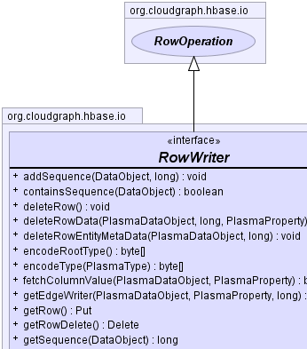
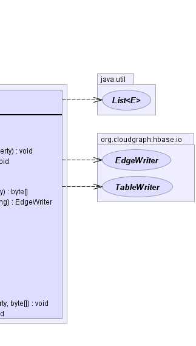

public interface RowWriter extends RowOperation
Acts as a single component within a TableWriter container
and encapsulates the HBase client Put and
Delete
operations for use in write operations across multiple logical
entities within a graph row.
TableWriter|  |  |
| Modifier and Type | Method and Description |
|---|---|
void |
deleteRow()
Creates a new row delete mutation, is not exists.
|
byte[] |
fetchColumnValue(PlasmaDataObject dataObject,
PlasmaProperty property)
Returns a single column value for this row given a context
data object and property.
|
Put |
getRow()
Returns the row put mutation.
|
Delete |
getRowDelete()
Returns the existing (or creates a new) row delete mutation.
|
TableWriter |
getTableWriter()
Returns the container for this writer.
|
java.util.List<Row> |
getWriteOperations()
Return the write operations for a row.
|
boolean |
hasRowDelete()
Returns whether there is an existing row delete mutation.
|
boolean |
isRootCreated()
Returns whether the root data object for this writer
is created.
|
boolean |
isRootDeleted()
Returns whether the root data object for this writer
is deleted.
|
addDataObject, contains, getColumnKeyFactory, getDataObject, getGraphState, getRootDataObject, getRootType, getRowKeyPut getRow()
void deleteRow()
Delete getRowDelete()
boolean hasRowDelete()
java.util.List<Row> getWriteOperations()
byte[] fetchColumnValue(PlasmaDataObject dataObject,
PlasmaProperty property)
throws java.io.IOException
java.io.IOExceptiondataObject - the context data objectproperty - the context propertyStatefullColumnKeyFactoryTableWriter getTableWriter()
boolean isRootCreated()
boolean isRootDeleted()
CloudGraph® is a registered trademark of TerraMeta Software, Inc. Copyright © 2014 - All Rights Reserved.